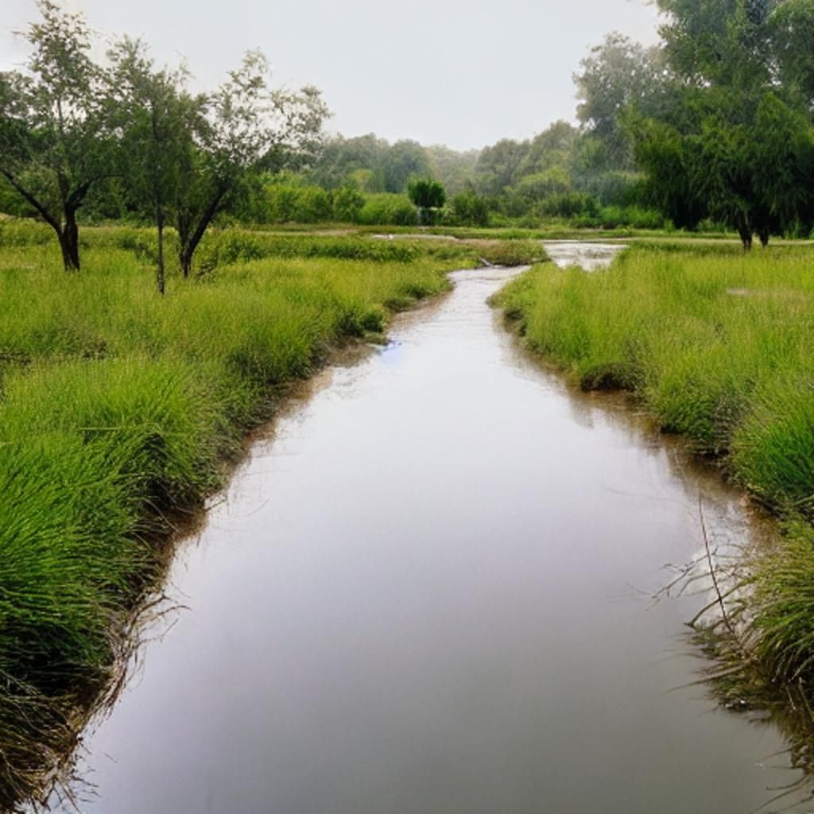

Resources
Tools, guides and publications for planners, officials, program managers and community groups.
Green infrastructure tools
Our planning tools are maintained and updated by MidAmerica Watershed.Org.

GIST — Green Infrastructure Selection Tool
Ranks the green infrastructure practices best suited to a site, based on 16 site criteria. Successor to our Green Infrastructure Planning Model (GIPM).
Open GIST →
OASIS — Open-Space Assessment
Scores an open space across 18 sustainability and connectivity measures in one weighted index. Successor to our Sustainable Urban Green Space Assessment Tool (SUGSAT).
Open OASIS →
An Introduction to Successful Green Infrastructure Transition
For planners, officials, and program managers. The book explores green infrastructure's role in urban sustainability, highlighting benefits such as improved air quality, stormwater management, and biodiversity. It addresses implementation challenges and offers solutions, strategies, and techniques for effective integration into urban planning.
It is an introductory reference guide for cities, including program managers, planners, elected officials, and community groups, showing what is essential at each milestone to ensure a successful green infrastructure project and, eventually, an improved systemic strategy.
All proceeds go to SCWA.
Manuals & newsletters
MARC Manual 2: Proposed Runoff Reduction & Retention Formula
The proposed MARC manual runoff reduction and site retention formula that SCWA supports.
SCWA Quarterly Newsletters
Local events and our project spotlight on emerging stormwater control technologies.